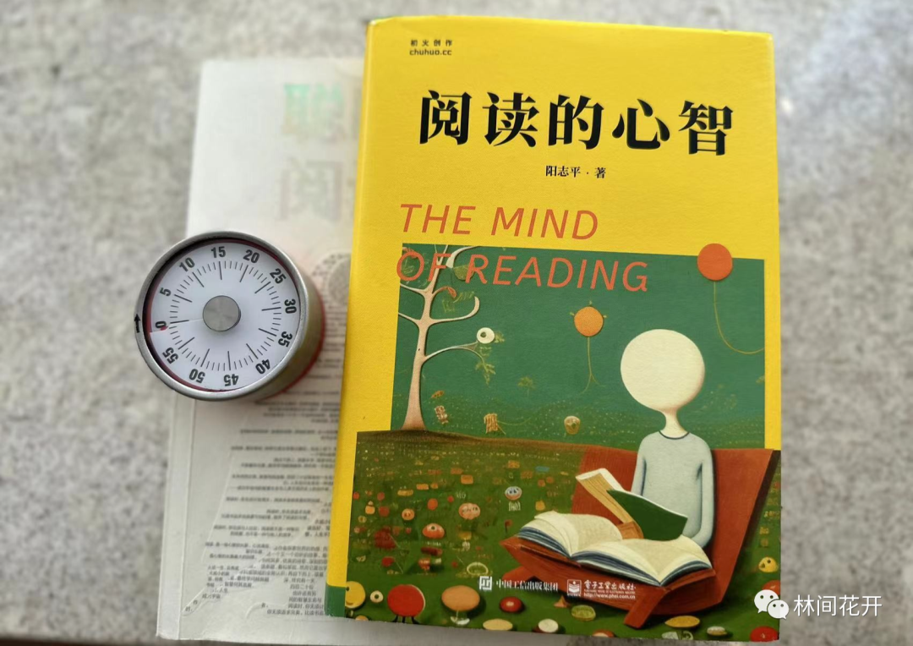

阅读与写作

同样是谈阅读的书，《聪明的阅读者》与手上这本《阅读的心智》有所不同，前者是阳老师的个人专著，系统谈阅读：何为读？如何读？读什么？体现了阳老师学者身份；后者则是他的个人文集，精选了近十年的随笔，侧重文采，体现他作家的身份。
阳老师以优美的笔触，一边谈着阅读，一边示范如何写出好看的书评，在这些书评中，有对单本书的评论，也有对多本书，多位作家的评论，信息量大，读来流畅，得益于阳老师的写作功力。
*1*
人们忘记了，写作首先是一种思维活动，而非写作技巧。
在《当我们谈论风格时，我们在谈论什么》一文提到，在学习写作技巧，先要学习写作风格。阳老师推崇古典风格，这是一种表达力求清晰、简单、真实的风格。文理并蓄，美感先行，心灵自由第一，这是阳老师的风格。
古典风格由认知学家马克.特纳和弗朗西斯-诺尔.托马斯提出，在他们合著的《古典风格》一书中，表明写作在下笔之前就已存在：
写作是一种思维活动，而不是技巧的拼凑。写作源于思想。要写出风格优秀的文章，得搞明白思维问题，而不只是学一些机械的技巧。
风格是写作之道，技巧则是写作之术。学习写作，不只追求写作技巧，如遣词造词、划分文章段落等，还要塑造出风格，光有写作技巧，没有写作态度，就如一个不善交谈的人，掌握了一堆谈话技巧，却沟通不顺畅，这样的文章注定失败。
真正的好文章，既有技巧又有态度。伟大作家，必有独特风格。
写作风格有多重要？阳老师说，风格，不仅是伟大作家的必修课，更是所有写作者应该思考的基本立场。
当你说你喜欢某位作家时，你喜欢的是这位作家的风格。
如何确定你的风格？《古典风格》一书把写作基本单位提炼为五大要素：真相、呈现、场景、角色、思想和语言，你的风格取决于你对五要素采取的立场：
- 你的写作首要动机是呈现真相吗？
- 你的语言是否充分表达思想？
- 你的读者是否有可能像作者一样了解真相？
- 你与读者之间的关系是否平等？
具体见：《古典风格》读书笔记
*2*
写文章，最难的是启动，如何快速启动？
你需要找到有感觉的词汇，激活大脑，这个词的专业术语叫做意象。
在《迷失在字里行间》一文中，阳老师找到核心意象「迷失」，这是全文的题眼。当你找到了这样的题眼后，下一步就要不断放大放大，比如，你可以像阳老师一样，用意象生成一组二级标题，串联整篇文章：迷楼、清单、城市。
有种迷失叫作迷楼。
有种迷失叫作清单。
有种迷失叫作城市。
如果你实法无法找到合适的意象编写组块，你也可以学阳老师一样，用数字1 2 3 4 5 6 固定组块，有了这个框架，你就可以快速启动。
写千字文难吗？对写作新手来说，肯定难，不妨用卡片降低写作压力，一上来不要求写千字，而是写百来字，一张卡片的容量，写作任务瞬间降低，推荐《像卢曼一样写卡片》：
我是一名重度卡片写作爱好者。我写作时，手边会放着纸质的卡片。我一般会先在卡片上写下一些灵感，然后再用卡片写作软件，将它们正式组合成文章。同样，在我阅读时，也会不断使用纸质卡片盒与卡片写作软件，写下读书心得。
当一篇文章的信息量过大，在收尾时，不妨化用金句，既缓解了信息过多的紧张气氛，降低读者的认知负荷，又顺带突出全文的核心意象，意犹未尽。
是的，作家用字与词搭建了一个又一个鲜活世界，它们是宇文所安的迷楼，也是艾柯的清单，还是卡尔维诺的城市。在这些世界中，你可以触摸质感的故事，与主人公纵横捭阖；你也可以放肆哭泣，随那时光流逝。世态炎凉、雾霾风雪，你欢笑，你忧伤，总有一本书陪你——那好吧，且让我迷失在这样的世界中。
文章读多了，规律自然涌现，阳老师多数用金句结尾，请看《浮生若梦》：
落花流水，时光散漫。人生呵，可以像李白一样秉烛夜游、任侠放歌，将那辉煌璀璨浓缩在春日一夜；也可以像沈复一样，慢慢地穷困潦倒一生，慢慢地与芸娘在月光下对酌，在池塘前微醺而饭，那何尝不也是一种幸福？浮生若梦，为欢几何？恰在那分分秒秒、滴滴答答。
读到这样的文字，怎一个美字能表达，让人欲罢不能。
*3*
不是所有的书评都只能写成信息型。《聪明的阅读者》将文本分类三种类型：信息型、叙事型、美感型，信息型侧重信息的呈现，逻辑，在于说服，典型有演讲、报告、邮件、读书笔记、评论等；叙事型侧重事件先后次序，如小说、戏剧等；美感型侧重的是文采，如诗歌、散文诗等。
需提醒，一篇千文字文，最多只能选择一种篇章结构，如有两种以上，容易打架，无法给读者留下深刻印象。
读到《致薇拉》时，大呼过瘾，故事型的读书笔记，更吸引人。
文章以四幕剧的方式写，从初识到相爱到婚外恋到巅峰到谢幕，每一幕都吊足胃口，迟迟不说「他」是谁，「她」又是谁。
直到结尾，才揭晓答案：他是纳博科夫，她是薇拉，这是两人相伴一生的爱情故事。
为什么这篇文章如此吸引人？阳老师使用了「社会意向性」的写法。什么是社会意向性？指的是理解一个人内心世界的过程。
阳老师经常强调，写作，有可教的一面，也有不可教的一面。
用意象、用卡片写作，可教，难教的是社会意向性，这是天赋作家的看家本领，只有伟大作家才具备高阶意向性，像莎士比亚，张爱玲这些伟大作家，最高能掌握七阶意向性。这也是为什么他们写出来的故事更加吸引人的原因，在于他们更懂操作人物的心理走向。而普通作家大多在三阶左右。
即便是信息型，阳老师也能写出文采和新意，《创作者的品味》就是一篇典范，这篇文章他向卡尔维诺的《为什么要读经典》致敬，文章结构值得学习。
在《聪明的阅读者》一书中有示范：
摘录主题句如下：
“品味不是流行，虽然流行可以成为品味。
品味不是指标，虽然人们常常误解可以轻易量化品味。
品味不是实用的，虽然人们常常赋予美以意义。
好的品味，它倾向那些在历史上永垂不朽的作品。
好的品味，它倾向那些符合自然，节省人们心力的作品。
好的品味，它倾向那些含蓄的、暗示的作品。
好的品味，总是看上去简单，却常常来之不易。
好的品味总是有傲气的。好品味不会追求体系。”
如果抽象成符号，卡尔维诺的篇章结构是AAA- BBB-ABA- BC-BBB......我的（《创作者的品味》）是AAA- BBB- CCA。通过文体细读，我们不仅可以读得更通透，还可以学到很多写作手法。
4
句法上，阳老师有怎样的写作规律？
《真实的学术写作》一文告诉我们，阳老师喜欢使用主题句先行。把一个段落中核心的内容提炼成一句主题句，放在段落开头，《真实的学术》从第2个组块到第6个组块，无不如此，摘录出主题句：
真实的学术写作，既不同于创意写作，也有与创意写作想通的一面。
真实的学术写作，五方面，讲究文章的“颜值”；另一方面，讲究写作的逻辑严谨。
真实的学术写作，时面需要将所有读者想象成一个人，尽量减少读者的语义能量与句法能量的消耗。
真实的学术写作，它一方面需要个人埋头苦干，另一方面讲究与人协作。
提到与其他风格相比，古典风格的优点也是主题先行：
它更符合人类的认知习惯。
它灵活多变，适应一切文体。
它简洁但不简单，清晰但不肤浅。
前面提到的《迷失在字里行间》核心的三句主题句，起到了点题作用：
有种迷失叫作迷楼。
有种迷失叫作清单。
有种迷失叫作城市。
《创作者的品味》也有同样的主题句：
品味不是流行，虽然流行可以成为品味。
......
主题先行，是阳老师开设的快写慢改课中，慢改句子的一个重要技巧。用意是突出重点，同样一个段落，一种是给出主题句小小的线索，再具体展开讲；另一种不给出提示，啪啪啪讲一大段，相比之下，读者读完后，更能记住第一种所讲的内容。
我尝试使用主题句的策略用在写卡片上。先有一个句子，再扩写成一个段落，写作效率高不少。过往写卡片，用关键词去激活，写得磕磕绊绊，切换到用关键句，越写越顺。
在《阅读的心智》一书中还有很多写作技巧，使用简单句、化为金句、增加闲等；使用四字词，错落有致排列，还有很多符合认知科学的写作技法，只要你与作者对话，就能发现好文章的奥秘。
小结
“纸上得来终觉浅，绝知此事要躬行。” 对写作者来说，再多的写作之道，都不如立马坐在桌前，一字一句写起来。